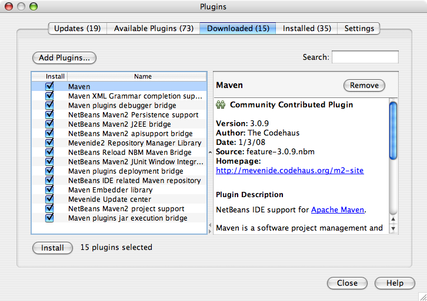

Exercise 0: Configuring your environment
If you are using a lab machine provided at JavaOne, the steps in Exercise 0 have been completed for you. If your environment is already configured, please skip this exercise and go to Exercise 1
Step-by-Step Instructions:
The following steps will guide you through setting up the environment necessary for completing this lab. This consists of the following steps:
- Launch the NetBeans 6.0 IDE.
- Ensure the Maven 2 plugin for NetBeans 6.0 is installed.
- Install Subversion.
- Checkout, build, and install the GlassFish v3 application server.
Steps:
-
Launch the NetBeans 6.0 IDE.
- On Windows: Start --> Programs --> NetBeans IDE --> NetBeans IDE 6.0 --> NetBeans IDE
- On Solaris or Linux: open a terminal window, and type:
netbeans
- Ensure the Maven 2 plugin for NetBeans 6.0 is installed.
This plugin is required in order to build the lab files as well as GlassFish modules.
- Choose
Pluginsfrom theToolsmenu. - Select the
Available Pluginstab. - Select the
Mavenplugin and press theInstallbutton.
Figure 0-1: Installing the Maven Plugin
- Choose
- Install Subversion.
Installation of Subversion is only required if you need to checkout the v3 source code. Subversion is NOT needed to complete this lab. Step 4 explains how to checkout the Glassfish v3 source and build it.
- Choose Plugins from the Tools menu. Select the Available Plugins tab.
- Select the Subversion Plugin and press the Install Button.
 Figure 0-2: Installing Subversion
Figure 0-2: Installing Subversion - Checkout, build, and install the GlassFish v3 application server.
This step is not required for this lab. For your reference, a snapshot of the GlassFish v3 source code has been included, and GlassFish v3 has been installed in the "
glassfish-src/v3/glassfish" directory. However, if you want the latest code, you may checkout and build the source code, follow the steps below for more detail.- Checkout GlassFish v3 source code:
svn checkout https://svn.dev.java.net/svn/glassfish-svn/trunk/v3
NOTE: You may need to register with the GlassFish project on java.net as an
Observer. Visit the GlassFish "Request Project Role" page to request theObserverrole. -
Build the GlassFish server:
cd v3 mvn install
- Install the GlassFish v3 application server:
unzip v3/distribution/glassfish/target/glassfish.zip
For more information regarding the GlassFish v3 development environment and workspace, refer to the build instructions at: http://wiki.glassfish.java.net/Wiki.jsp?page=V3FullBuildInstruction.
- Checkout GlassFish v3 source code: